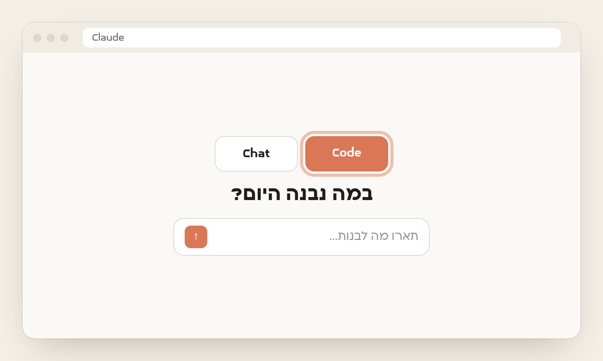

בעמוד הזה
קלוד קוד בדימוי אחד
יועץ
יושב איתכם, עונה ונותן רעיונות, אבל לא נוגע בכלום.
בעל מקצוע
לוקח את הכלים, בונה, מתקן, ומראה לכם מה עשה.
קוד הוא המתכון שהמחשב קורא כדי להציג אתר, וקלוד קוד כותב אותו בשבילכם.
איך קלוד קוד עובד
- 1אתם כותבים מה רוציםבעברית רגילה, כמו הודעה לחבר
- 2הוא מתכנןמחליט אילו עמודים וקבצים צריך
- 3הוא בונהכותב את הקוד ויוצר את הקבצים לבד
- 4הוא בודקמריץ את מה שבנה ומתקן טעויות
- 5אתם מבקשים שינוי"תגדיל את הכותרת", "תוסיף טופס"
דוגמאות
- 1אתר תדמית לנגרתמונות עבודות, שירותים וטופס
- 2יומן תורים לספריתלקוחות קובעים תור לבד
- 3גיבוי אוטומטי לקבציםגיבוי הפרויקטים ל-Google Drive
מה ההבדל בין קלוד לקלוד קוד
| קלוד (הצ'אט) | קלוד קוד | |
|---|---|---|
| מה עושה | עונה, מסביר וכותב טקסט | בונה ומשנה אתרים ומערכות |
| נוגע בקבצים? | לא | כן, יוצר ומשנה לבד |
| מה מקבלים | תשובה על המסך | אתר או כלי שעובד |
| מתי משתמשים | מייל, פוסט, רעיון | אתר, דף נחיתה, מערכת לעסק |
| איפה לוחצים | הלשונית Chat | הלשונית Code |

איפה עובדים עם קלוד קוד
- 1אפליקציה במחשבMac או Windows, הכי פשוט
- 2בדפדפןclaude.ai/code, בלי התקנה
- 3בטלפוןהאפליקציה של קלוד ל-iPhone ול-Android
- 4בטרמינלחלון פקודות שחור, למתכנתים
כמה עולה קלוד קוד
נכון ל-18 בנובמבר 2026, לפי דף המחירים של Anthropic. למתחילים מספיק Pro.
כל המנויים וההבדלים ביניהם: כמה עולה קלוד קוד.
האם צריך לדעת לתכנת?
לדעת קוד
מסבירים במילים מה בונים ובשביל מי.
עברית רגילה
אפשר גם לדבר במיקרופון.
איך מתחילים לעבוד עם קלוד קוד
- 1פותחים חשבון קלודונרשמים למנוי Pro
- 2מתקינים את האפליקציהמ-claude.com/download
- 3פותחים חשבון GitHubכאן נשמרים הפרויקטים
- 4בונים פרויקט ראשוןכותבים בקשה ורואים אותו בונה
מעדיפים וידאו? קורס קלוד קוד בעברית, בחינם.
שאלות נפוצות
האם קלוד קוד בחינם?
לא. צריך מנוי בתשלום של קלוד, לפחות Pro ב-20$ לחודש (נכון ל-18 בנובמבר 2026). הקורס והמדריך שלנו חינמיים.
האם קלוד קוד עובד בעברית?
כן. כותבים לו בעברית רגילה, והוא עונה ובונה אתרים בעברית. ככה עשינו בכל המדריך.
צריך לדעת לתכנת כדי להשתמש בקלוד קוד?
לא. מסבירים לו במילים מה רוצים, והוא כותב את הקוד בעצמו.
איך מורידים את קלוד קוד למחשב?
מורידים את האפליקציה של קלוד מ-claude.com/download, מתחברים, ולוחצים על הלשונית Code. יש מדריך מלא בפרק 4.
אפשר לעבוד עם קלוד קוד מהטלפון?
כן. קלוד קוד זמין גם באפליקציה של קלוד ל-iPhone ול-Android.
יש קורס קלוד קוד בעברית?
כן. אצלנו יש קורס קלוד קוד חינמי בעברית, עם שיעורי וידאו ומדריך כתוב.
רוצים לבנות דברים כאלה בעצמכם?
הקורס חינמי ובעברית, ולא צריך לדעת לתכנת.